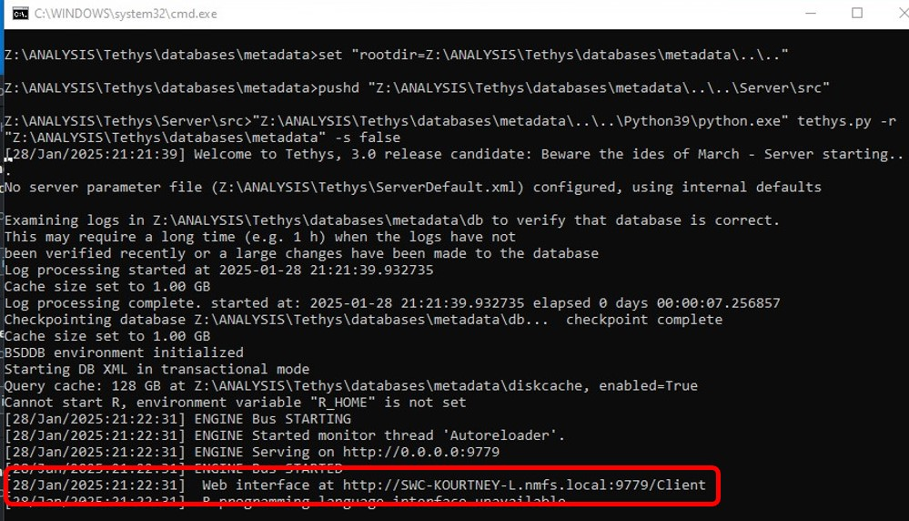
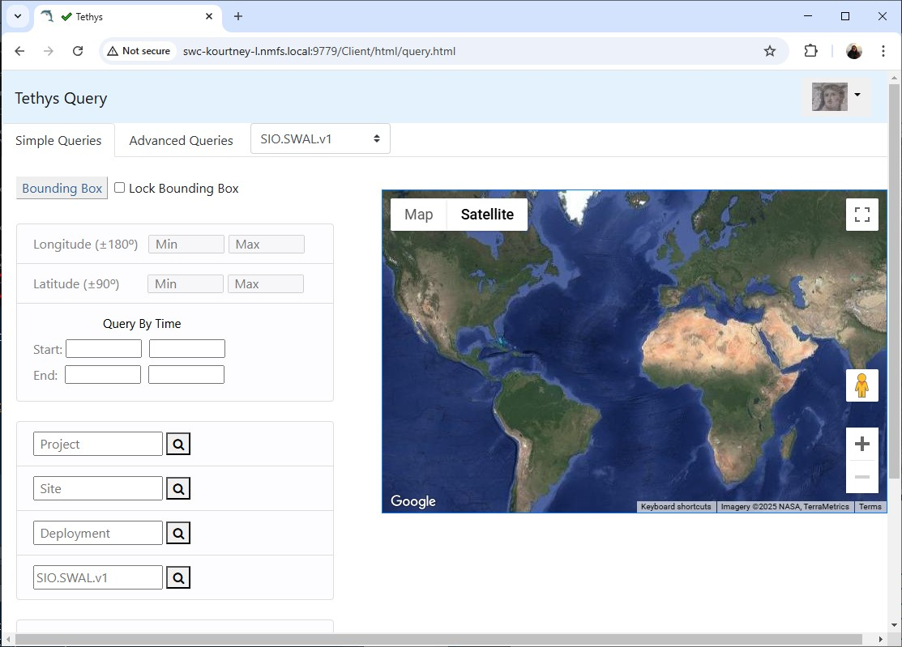
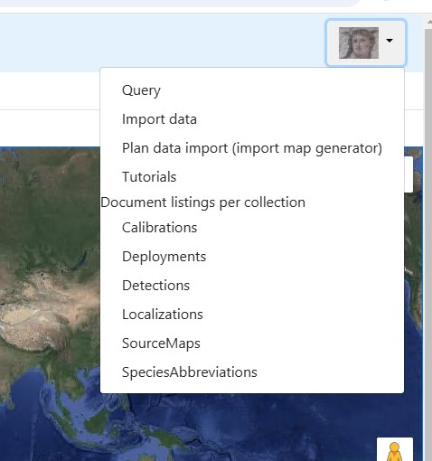
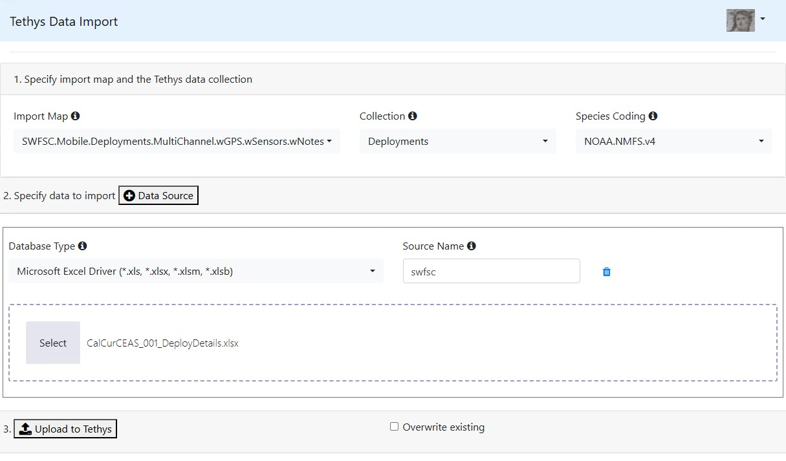
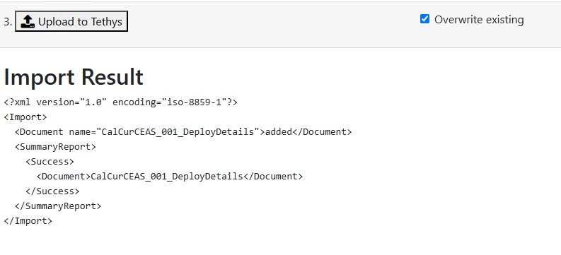

Tethys
Accessing Data
All ADRIFT, PASCAL, and CCES deployment metadata and detection data are archived locally in our lab’s Tethys database.
The Tethys database is saved locally on the DON server (Z:/ANALYSIS/Tethys). Tethys has multiple ways to access/visualize the database, but these directions will only include opening the web client interface (main web app and Data Explorer).
Tethys Web Interface
Open Tethys batch file (Z:/ANALYSIS/Tethys/databases/metadata/tethys.bat)
NoteThis may take a while to load if you have never accessed this database or if you are accessing it remotely (up to an hour)
Once the tethys.bat file has loaded, you should see a website address in the command window to open the web interface (this will include your computer name)

Navigate to the web address and you should see the following screen

Follow the Tethys documentation for interacting with the web client
Tethys Data Explorer
- Navigate to the Data Explorer batch file (Z:/ANALYSIS/Tethys/DataExplorer/data_explorer.bat)
- If you are using swc-srankin1-d desktop, skip to step 5. Otherwise, proceed to step 3
- Right click on data_explorer.bat, and select edit
- Update the server argument to point to your computer/server name (changing “../python39/python.exe data_explorer.py –server http://swc-srankin1-d.nmfs.local:9779” to “../python39/python.exe data_explorer.py –server http://swc-kourtney-l.nmfs.local:9779”
- Save and close, and double click on data_explorer.bat to run the batch file
- There will be a series of automatic queries to access the database, and then you should see a prompt to open the Data Explorer at another web address. It should be http://127.0.0.1:8050/
- See Tethys Data Explorer documentation for more information
Archiving Deployment Metadata
Any new deployments saved in the Deployment Details spreadsheet need to be archived to our Tethys database.
Deployment Worksheet Prep Script
Follow these steps to prepare a Deployment Worksheet for Tethys
Clone the TethysSAEL repository to your local computer and open the Create_Deployment_Worksheet.Rfile
Make sure the deployments you want to archive are saved to the deployDetails sheet in Deployment Details, download the file as a .xslx, and save it to ‘~TethysSAEL\Deployment Worksheets’, overwriting the previous version if needed
In the Create_Deployment_Worksheet.R file, run lines 24-104 to create the function to make the worksheet
See the example function use in lines 9-14
##Example # change your project name as needed and number of repetitions ProjectID = rep('CalCurCEAS',25) # List out the deployment ID for each deployment you want to package DepID=c('006','008','009','010','011','012','013','014','015','016','017','018','019','020','021','022','023','024','025','026','027') # Run the function for the deployments set above mapply(makeTethysDep,ProjectID,DepID)The output worksheets will be save to the main Deployment Worksheet folder. Move them to a project specific folder
Push your new Deployment Worksheets back to the repository
Importing Deployment Worksheets To Tethys
There are a variety of ways to import data to Tethys, these directions will cover the web client and Matlab based uploads. See Tethys Documentation for other options and more details
Web Client Uploads
Follow the steps in the Tethys Web Interface section above to start the server and open the Web Client
In the top right, click on the dropdown and select ‘Import data’

Set the Import Map to SWFSC.Mobile.Deployments.MultiChannel.wGPS.wSensors.wNotes, Collection to Deployments, and Species Coding to NOAA.NMFS.v4
Click on + Data Source, and ensure Microsoft Excel Driver is selected. Set the Source Name to swfsc
Click Select to choose a deployment worksheet to upload, or drag a file into the window.
Your screen should now look something like this

If you are making corrections to an existing Deployment Sheet, check the ‘Overwrite existing’ box. Click Upload to Tethys and the processing will start. If there is an error it will show up below step 3 in the image above. If there are no errors it will show the following message

Matlab Based Uploads
Note: This is currently not working so these are the general directions, however no screenshots are available to show step by step changes
Follow the steps in the Tethys Web Interface section above to start the server. Note, the web interface does not need to be open at this time
Open Matlab and enter the following into the command window
% Fill in your server name in the second argument dbSubmit('Server', 'http://SWC-SRANKIN1-D.nmfs.local:9779')A new window should open called ‘Tethys Import Metadata’
If not already set, change the Tethys Server to match your server
Set Collection to Deployments, Import Map to SWFSC.Mobile.Deployments.MultiChannel.wGPS.wSensors.wNotes, and Species Abbreviations to NOAA.NMFS.v4
Select the file you want to import by setting the path in the File import Tab (select Overwrite existing if making updates to existing files)
Click Submit to Tethys and the process will start. Similar to the web client, messages will appear in the box below to indicate any errors or if the file upload was a success.
You can use this option to batch process by setting the path to a folder, rather than an individual file
Archiving Detections
Similar to archiving deployments, in progress
Updating the Database
There are several methods to update existing documents in the database. These directions will cover Matlab based XQuery methods and a simple reuploading method.
XQueries
To update existing database entries, you can pass Matlab an XQuery that points to a specific node and includes an updated value for that node. An example XQuery and sample Matlab script are included here.
Creating a new XQuery
Follow the format of the example XQuery here
- Identify the specific node you want to change. You can find deployments and detection files in the Tethys web browser (click on Tethys icon in top right and select an option from ‘Document listings per collection’). In the example file, we are interested in the audio sensor number from ADRIFT 102 and we want to change it from 856142 to 856141. Change this information to match your node of interest
- Save the XQuery with a descriptive name to ‘Z:’
Running Query and Updated Database
- Open the Tethys batch file (see directions here) and check the server name. You should see something like http://YourComputerName.local:9779 or just http://localhost:9779
- Open TethysXQueryExample.m script in Matlab
- Add a new Matlab path with subfolders to “Z:”. This will point you to the correct path in the SAEL lab Tethys database and allow you to use Tethys functions and commands
- Run line 5 in the script to initiate connection to the database. If your server name from step 1 is different then ‘localhost:9779’ you will need to change the second argument from ‘localhost’ to the name of your server (example YourComputerName.local)
- Test the connection to the database by running line 7. If you see a new item in the workspace title DeploymentInfo with all deployments listed you can proceed to step 6
- Ensure the path to the .xq file is correct and run line 12
- To check if the database was uploaded, you can navigate to the specific node using the Tethys web interface query tools
Reuploading Data
You can also update the database by editing the existing document and reuploading it to the Database.
Deployment Example
In this example, I want to change the ADRIFT 102 audio sensor channel 1 number from 856142 to 856141
- Find and download the ADRIFT 102 deployment worksheet (all deployment worksheets should be stored here
- Open the worksheet and navigate to the SensorNumber field on the Sensor tab. Change the sensor number for channel 1
- Save the worksheet and ensure the updated one is reuploaded here
- Follow the directions here to import the updated deployment worksheet using one of the methods described. Make sure the ‘Overwrite existing’ box is selected to add your updates to the database
- To check if the database was uploaded, you can navigate to the specific node using the Tethys web interface query tools
More info
See Tethys Documentation, Tethys SAEL GitHub repository, and our detailed ADRIFT methods for more information.
Contact Kourtney Burger (kourtney.burger@noaa.gov) with any questions